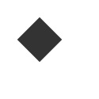
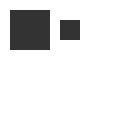
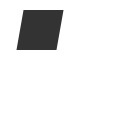
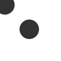
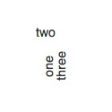

reset()
Syntax
reset()
Description
Tutorial
Example

|
fill(0.2) fontsize(14) rotate(90) text("one", 30, 80) text("two", 45, 80) reset() text("three", 70, 80) |
rotate()
Syntax
rotate(amount) # amount to rotate (in default unit)
rotate(UNITS) # set default unit to DEGREES, RADIANS, or PERCENT
rotate(percent=0.5) # 0 ... 1.0 rotate(degrees=180) # 0 ... 360 rotate(radians=pi) # 0 ... 2*pi (a.k.a. tau)
Description
Rotates all subsequent shape, path, text, image commands. The rotate() command is
called with one parameter, by default specifying the angle in degrees. The default unit
can be changed by calling rotate() with DEGREES, RADIANS, or PERCENT as its only argument.
Subsequent calls to rotate() will then be interpreted in those units
Alternatively, a rotation can specify its units explicitly by using a keyword
argument. For example, rotate(radians=tau/2) will
flip the canvas upside down (regardless of the current default unit). Like other
transform operations, the rotate() command works incrementally: if you call
rotate(30), and later on call rotate(60), all commands
following that second rotate() will be rotated 90 degrees (30+60).
The default rotation unit is part of the graphics state handled by the transform() command. When units are redefined within a transform() block, the original units will be restored when the block completes.
Tutorial
Example
|  |
fill(0.2) rotate(-45) rect(30, 30, 40, 40) |
scale()
Syntax
scale(x, y=None)
Description
Tutorial
Example
|  |
fill(0.2) rect(10, 10, 40, 40) scale(0.5) rect(50, 10, 40, 40) |
skew()
Syntax
skew(x, y=None)
Description
Tutorial
Example
|  |
fill(0.2) skew(10.0) rect(20, 10, 40, 40) |
transform()
Syntax
transform(mode=CENTER, *transforms)
with transform(mode=CENTER, *transforms) as t:
Description
The mode parameter sets the registration point – the offset for
rotate(), scale() and skew() commands. By default, shapes, paths, text and images rotate around
their own centerpoint. transform() can be called with an optional first-parameter of
CORNER to rotate and skew around the canvas’s
upper left corner.
When called as part of a with block, any subsequent
transformation calls will apply only within the block. At the end of the block, the
transformation state will be reset to what it was before the transform() call. This is
equivalent to calling push() and pop() at
the beginning and end of the block respectively, though transform() will also reset the
mode on exit.
oldmode = transform() transform(CORNER) push() translate(100,20) line(0,0, 40,0) pop() transform(oldmode) | simplifies to |
with transform(CORNER): translate(100,20) line(0,0, 40,0) |
Inline Transformations
In addition to the optional mode parameter, the transform() function
also accepts a sequence of transformation commands. These commands will affect the
global state and are equivalent to calling them on separate lines of your script.
rotate(radians=pi/2) scale(2.0) | or |
transform(rotate(radians=pi/2), scale(2.0)) |
When used in a with-statement, the commands will be applied at the
beginning of the block and then reset at the end. For example, the following usages are
equivalent:
with transform(): reset() translate(40,40) rotate(45) rect(0,0,20,20) |
with transform(reset(), translate(40,40), rotate(45)): rect(0,0,20,20) |
Returns
When called as a simple function, returns the current transform mode (CORNER or CENTER).
print "initial mode:", transform() print "new mode:", transform(CORNER) >>> initial mode: CENTER >>> new mode: CORNER
Alternately, the Transform assembled in a
with block can be captured using the as construct
and can be applied to BezierPath and
Point objects even after the block has completed:
with transform(CORNER) as t: # define a Transform object in the `t` variable skew(20.0) square = rect(20,20,40,40, fill=0.7) # a non-transfomed square parallelogram = t.apply(square) # create a skewed copy of the square bezier(parallelogram, fill=None, stroke=0)
Tutorial
Examples

|
fill(0.2) fontsize(14) rotate(90) text("one", 40, 80) with transform(rotate(-90)): text("two", 40, 40) text("three", 50, 80) | or |
fill(0.2) fontsize(14) rotate(90) text("one", 40, 80) push() rotate(-90) text("two", 40, 40) pop() text("three", 50, 80) |
translate()
Syntax
translate(x, y)
Description
Tutorial
Example
|  |
fill(0.2) oval(-10, -10, 40, 40) translate(50, 50) oval(-10, -10, 40, 40) |
Classes
Transform
Syntax
Transform()
Description
Methods
t.translate(x=0, y=0) t.rotate(degrees=0, radians=0) t.scale(x=1, y=None) t.skew(x=0, y=0) t.invert()
t.append(t) t.prepend(t)
t.apply(path_or_point)
t.copy()
See the tutorial on paths to learn more about the methods.
The apply() method returns a new BezierPath or Point with the
defined transformations applied to it.
NodeBox Compatibility
Though their functionality has been subsumed by the commands listed above, the following NodeBox Transform commands may also be used in your scripts.
push() & pop()
Syntax
push()
pop()
Description
PlotDevice is a so-called state-machine. For example, once rotate(45)
is called, all subsequent shapes, paths, text and images are rotated 45 degrees – the
rotation ‘state’ has been set to 45°. While the transform()
command provides a mechanism for controlling the scope of these state changes within
blocks, the push() & pop() commands allow your script to save and restore the state
manually.
All transformations, such as rotate() and skew(), defined between a push() and pop() call last only until pop() is called. Thereafter the previous state is used. For example, a rotate(-30) within a rotate(45) means a rotation state of 15 degrees until pop() is called and the rotation state becomes 45 degrees again.
Tutorial
Example
|  |
fill(0.2) fontsize(14) rotate(90) text("one", 40, 80) push() rotate(-90) text("two", 40, 40) pop() text("three", 50, 80) |
push() & pop()
Syntax
push()
pop()
Description
PlotDevice is a so-called state-machine. For example, once rotate(45)
is called, all subsequent shapes, paths, text and images are rotated 45 degrees – the
rotation ‘state’ has been set to 45°. While the transform()
command provides a mechanism for controlling the scope of these state changes within
blocks, the push() & pop() commands allow your script to save and restore the state
manually.
All transformations, such as rotate() and skew(), defined between a push() and pop() call last only until pop() is called. Thereafter the previous state is used. For example, a rotate(-30) within a rotate(45) means a rotation state of 15 degrees until pop() is called and the rotation state becomes 45 degrees again.
Tutorial
Example
fill(0.2) fontsize(14) rotate(90) text("one", 40, 80) push() rotate(-90) text("two", 40, 40) pop() text("three", 50, 80) |